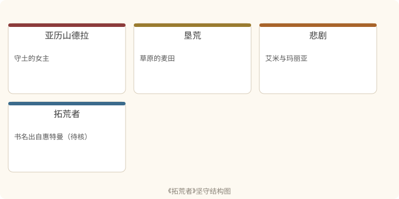

啊，拓荒者！
一、基本信息
| 作者 | 薇拉·凯瑟 |
|---|---|
| 成书/出版 | 1913年（作者页 B292 口径：O Pioneers! (1913)） Willa Cather — Encyclopaedia Britannica（百科全书） |
| 国别/地区 | 美国 |
| 时代 | 近代 · 20世纪初 |
| 体裁 | 长篇小说 |
| 语言 | 英语 |

《拓荒者》坚守结构图（主题·结构图）
二、创作背景
作者页（B292）：凯瑟 major_works 载'O Pioneers! (1913)'（B292 作者页定位，详见 wodeandongnia 条核对）。
Britannica（B292）：'With O Pioneers! (1913) and My Ántonia (1918)'——边疆精神与勇气的主题（通说待核）。
三、内容脉络
亚历山德拉继承内布拉斯加农场——坚守土地而致富（通说待核）。
EMIL？——不：艾米与玛丽亚的悲剧线（通说待核）。
四、主要人物表
| 人物 | 身份 | 说明 |
|---|---|---|
| 亚历山德拉 | 农场主 | （通说待核） |
| 艾米 | 恋人 | （通说待核） |
五、主题与艺术特点
- 拓荒者的坚守与土地（B292 语境：frontier spirit and courage）。
- '精神与道德价值高于物质主义'（B292 作者级）。
- 地域主义（B292：unique regionalism——作者级）。
六、影响与评论
- Britannica：'With O Pioneers! (1913) and My Ántonia (1918)'——边疆主题的代表（B292）。
Willa Cather — Encyclopaedia Britannica（百科全书） - Britannica：1922年《我们中的一个》获普利策奖（B292 作者级）。
Willa Cather — Encyclopaedia Britannica（百科全书）
七、阅读建议
难点
- 移民垦荒史。
- 北欧裔移民名。
- 《啊，拓荒者！》（人民文学出版社/上海译文版本，通说待核）。
- 英文原版（公有领域）。
凯瑟平原小说之首。
八、待核实
- 1913年出版（Houghton Mifflin说）核对。
- 亚历山德拉/艾米人名核对。
- 书名出自惠特曼诗（通说待核）。
本页主要来源
薇拉·凯瑟的其他收录作品：我的安东妮亚